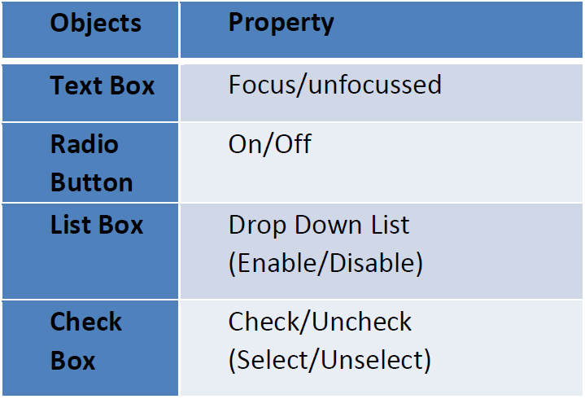

In this we Check Property & Behaviour of the object. During this testing, we are going to validate the Objects property, I mean to say that we are going to check the Behaviour of Objects.
-It Check Type and Size of the input
-Type means DataType of input
-Size means if mobile number tab is there then size will be 10.
-In this Coverage we maintain BVA (Boundary Value Analysis) & ECP (Equivalence Class
Partition)
-In this we check whether system generate error message or not.
-If we entered invalid information in field then system should be generate error message.
Example: Mobile Number Field: If we entered less and more than 10 digit in mobile number
field then system generated message
-In this we check working of system as per functional flow diagram or not.
-In this Coverage check sequentially of functional module.
-Ex: If you are filling online examination form
-Then, 1) Personal Information Detail 2) Contact Details 3) Academic Details 4)
Banking/Payment details 5) Submit
-In above example once one stage completed then system should allow to next stage.
-In this we check athematic operations.
-Athematic operations: Addition, subtraction, division, multiplication
Example: On Amezon.com If we added Vivo mobile to cart & it's price 20K then & again
added new Samsung Mobile & Samsung Air Conditioner price 18K and 30K respectively.
Then it will be added in to cart then total price is 68K (It is done by Addition) and if we
cancelled/removed Vivo Mobile from Cart then total is 48K (It is done by Subtraction)....So
here we check this operations.
-The backend of any software is data base.
-IN back end coverage we check whether entered data stored successfully in data base or
not.
-We also check whether data get fetch from data base.
-By using SQL Queries.
Example: -If we filled online examination form by adding all required information then
clicked on Submit button.
-Then all data save in data base. Then we check we are able log in or not by using User
Name and Password.
-We can also fetch specific person/candidate information from data base.